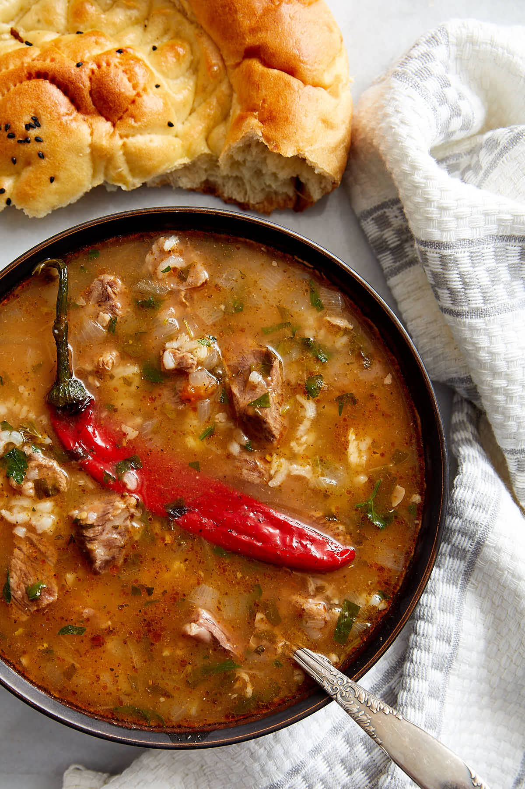

Description
Beef soup Kharcho is a traditional dish of the Republic of Georgia and is known well outside of Georgia itself. There is a good reason for that – the soup is exceptionally delicious and has a characteristic rich flavor thanks to the spice mix that goes in it. This soup is traditionally made of fatty cuts of beef – chuck or brisket. As a result, the soup is rich and comforting. To balance out the richness of the soup sour plum sauce called Tkemali is traditionally added, which can be substituted by tomato puree or red wine vinegar. For a cold, wintry day I can’t think of a much better dish than a bowl of this delicious soup.
Ingredients
- 2 lbs beef (traditionally chuck or brisket)
- 2 medium onions (finely chopped)
- 1/2 cup rice (uncooked, rinsed in 5 waters)
- 2 large tomatoes (peeled and pureed in a blender)
- 2 Tbsp Tkemali sauce (or 1-2 Tbsp red wine vinegar)
- 8 twigs fresh parsley (2 whole, 6 finely chopped)
- 8 twigs fresh cilantro (2 whole, 6 finely chopped)
- 1 Tbsp khmeli-tsuneli spice mix (see notes)
- 2 cloves garlic (pressed)
- 2 red hot chili peppers (whole and undamaged)
- Kosher salt (to taste)
- Black pepper (to taste)
- More chopped parsley and cilantro for garnish when serving.
Steps
- Cut beef chuck or brisket into bite size pieces, place in a large boiling pot, add 8-10 cups of water and bring to a boil. Remove scum, turn the heat to low, cover and simmer for 1 1/2 - 2 hours, until the meat is tender.
- After 1 1/2 - 2 hours, add the rinsed rice, chopped onions, two twigs of parsley and two twigs of cilantro. Continue simmering for another 20 more minutes.
- Add the finely chopped parsley and cilantro, pressed garlic, whole red hot chili peppers, spice mix, Tkemali sauce or red wine vinegar, pureed tomatoes, salt and pepper to taste, and continue cooking for another 15 minutes.
- Serve hot, garnished with more fresh chopped parsley and cilantro.